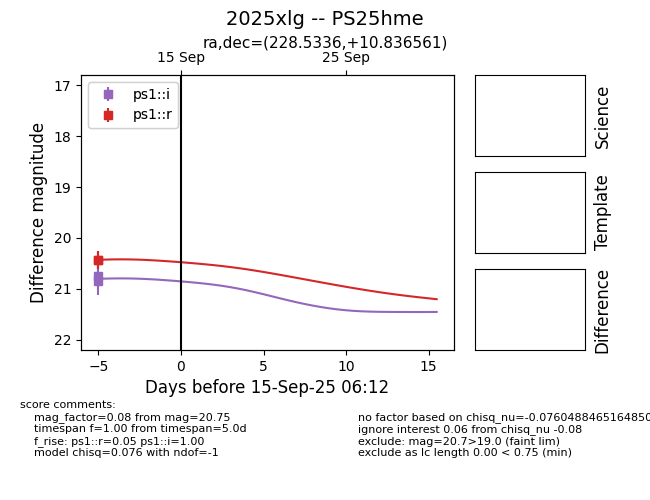

TNS: 2025xlg
YSE: 2025xlg
2025xlg (yse,tns)
PS25hme (panstarrs)
equatorial (ra, dec) = (228.5336,+10.83656)
galactic (l, b) = (13.9977,+52.73233)

last ps1::g=20.20, ps1::i=20.93, ps1::r=20.47
2 ps1::g, 2 ps1::i, 2 ps1::r detections